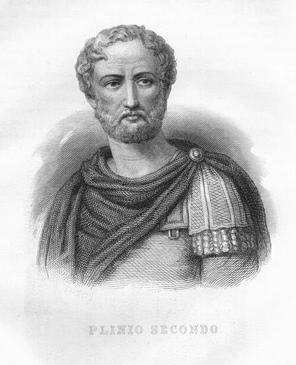

- Printed source
- Pliny the Elder, Naturalis historia 8.15 (8.38). English: The Natural History of Pliny, trans. John Bostock and H. T. Riley, vol. II (London: Henry G. Bohn, 1855), pp. 262–263.
Aurochs / Primary source
Pliny the Elder
Natural History

Pliny the ElderImage & authority record ↗
01 / Composition77 CEDedicated to Titus
02 / English1855John Bostock and H. T. Riley
English translation
8.15 · English translationScythia produces but very few animals, in consequence of the scarcity of shrubs. Germany, which lies close adjoining it, has not many animals, though it has some very fine kinds of wild oxen: the bison, which has a mane, and the urus1, possessed of remarkable strength and swiftness. To these, the vulgar, in their ignorance, have given the name of bubalus: whereas, that animal is really produced in Africa, and rather bears a resemblance to the calf and the stag.
Edition
Further reading
- 01Mieczysław Rokosz, “History of the aurochs (Bos taurus primigenius) in Poland” (1995), Animal Genetic Resources Information 16: 5–12. ↗
Royal documents, chronicles and illustrations concerning the last aurochs at Jaktorów.
Reference
Cite this source
Pliny the Elder, Naturalis historia 8.15 (8.38). English: The Natural History of Pliny, trans. John Bostock and H. T. Riley, vol. II (London: Henry G. Bohn, 1855), pp. 262–263.